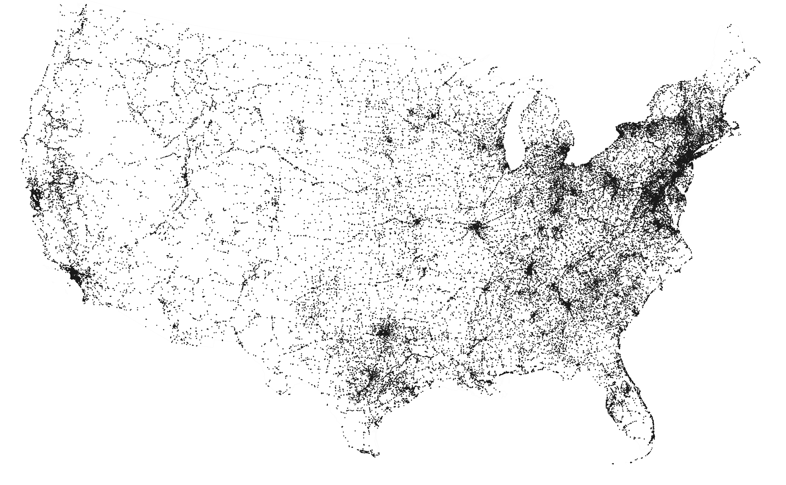
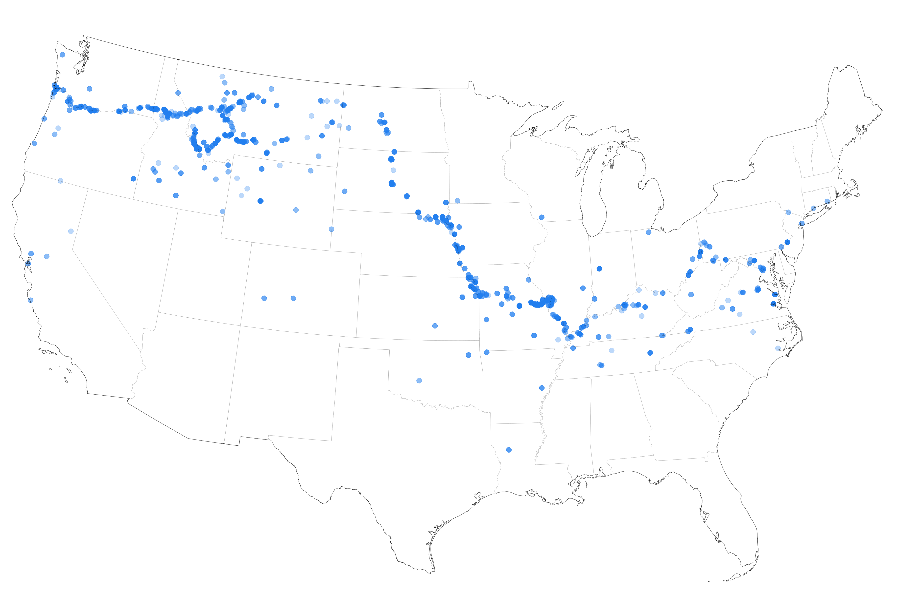
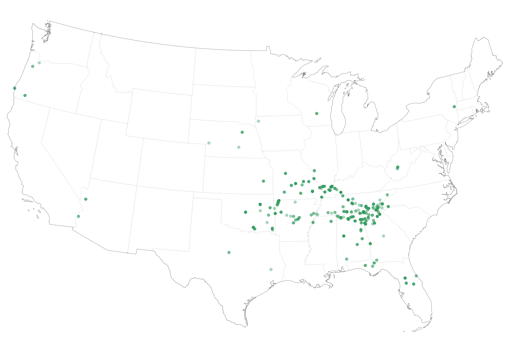
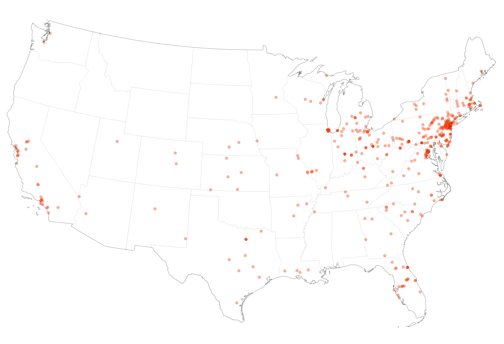
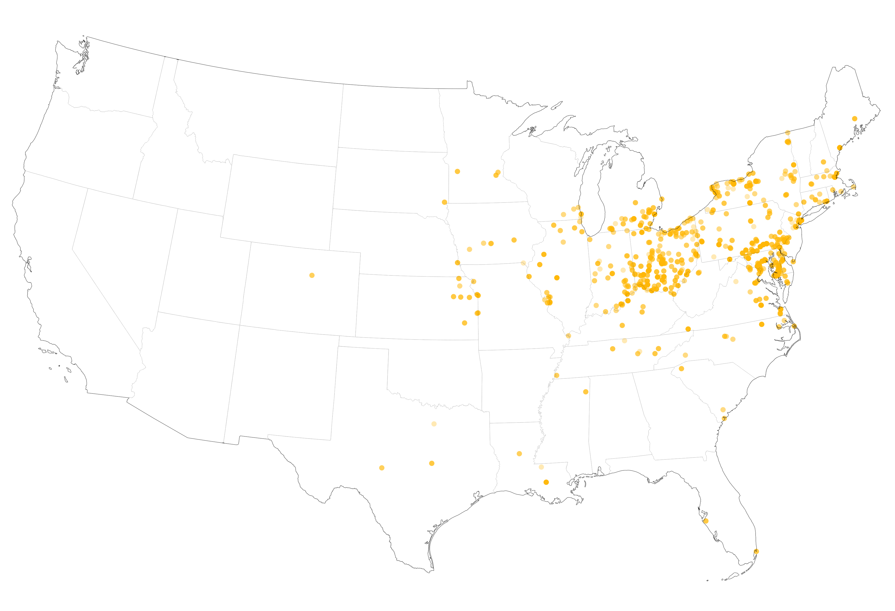

In the summer of 2024, I pitched and reported a data-driven story for Midstory about how we choose to commemorate our past, based on data from the Historical Marker Database.
The published story uses ArcGIS and Flourish,
but I've been chipping away at a custom-code/vis version because I still have lots of questions about this dataset.

Recently, I've been exploring markers' point geography.
I'm curious about how historical events become
part of our physical landscape, and the
extent to which public history is tied to historical geography.
For example:
Historical markers trace Lewis & Clark's westward expedition...

...and the Trail of Tears.

They show that remembrance of 9/11 extends well beyond New York...

...but that the Underground Railroad is sparsely marked in the South.

I hope to share more soon!